大阪地区
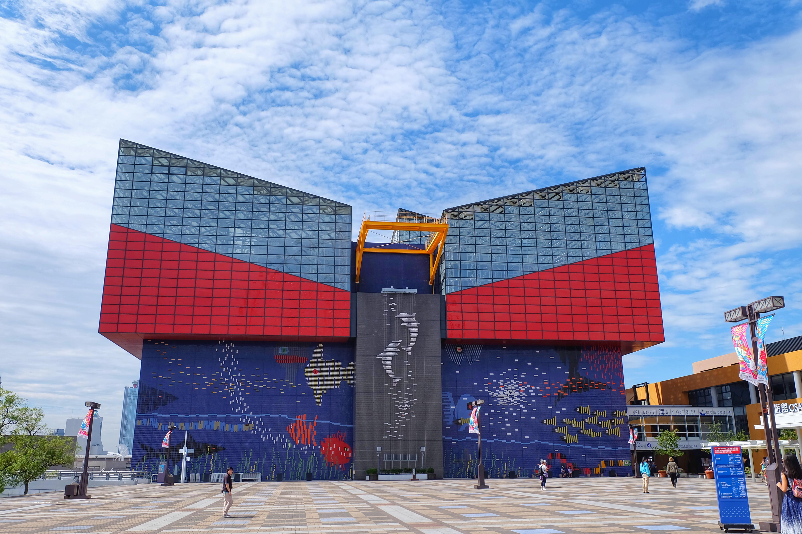
海游馆
世界级水族馆，亲子游玩首选
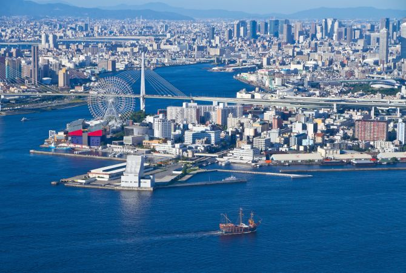
海滨广场
大阪港浪漫观景地
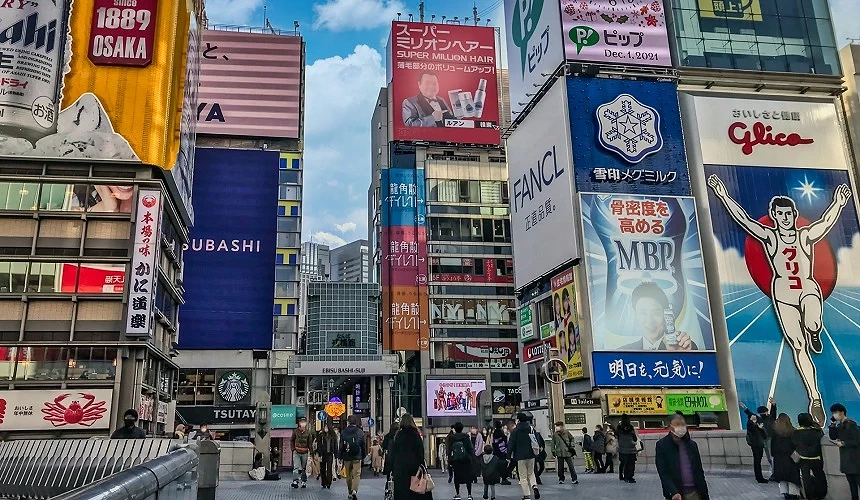
道顿堀
美食天堂，网红打卡地标
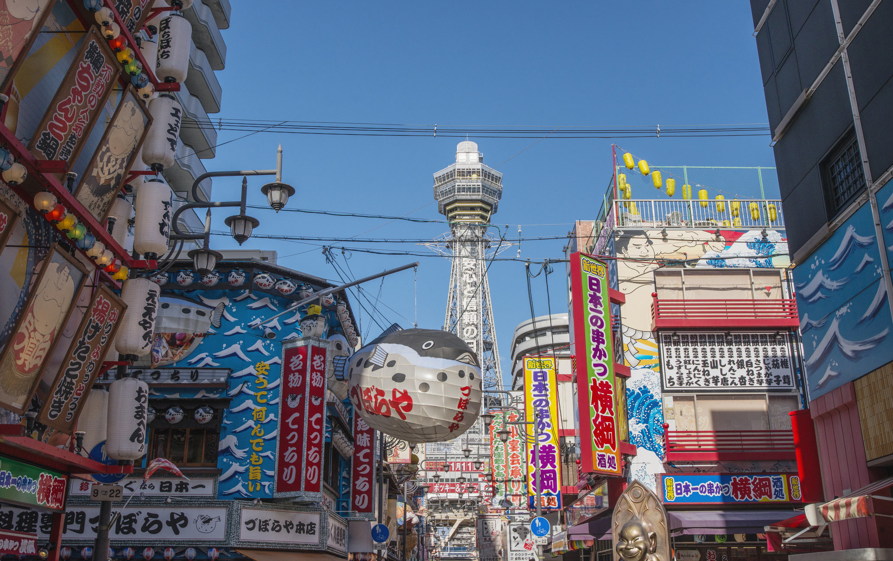
通天阁
大阪地标，俯瞰全城美景
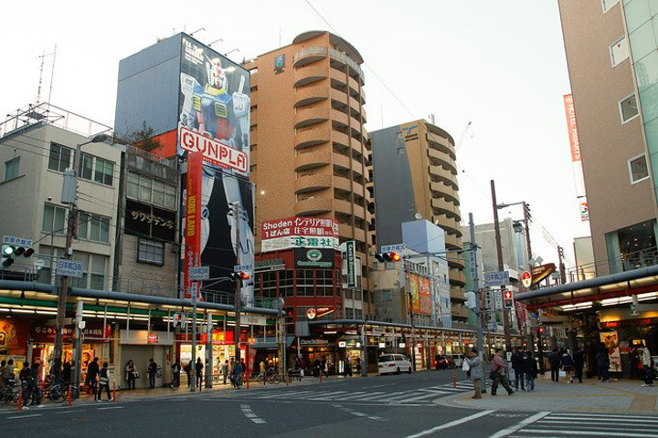
日本桥电器街
动漫·电器购物圣地

大阪城公园
历史古迹，樱花胜地
京都地区
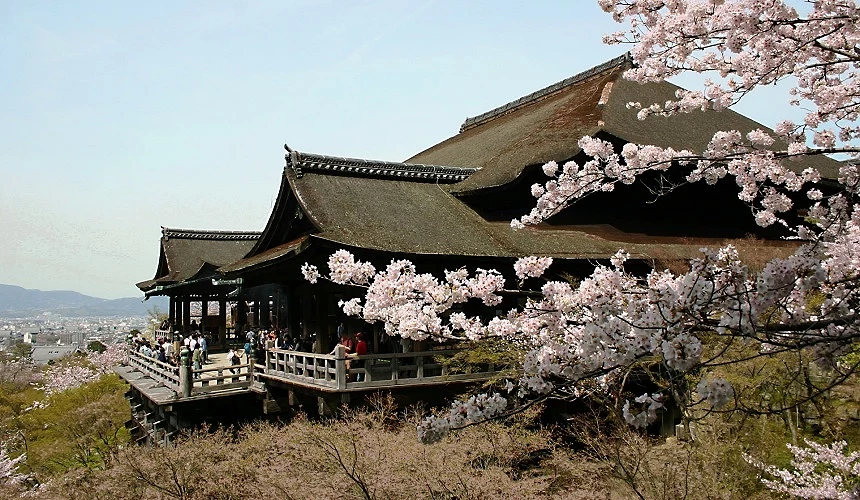
清水寺
世界文化遗产，京都象征
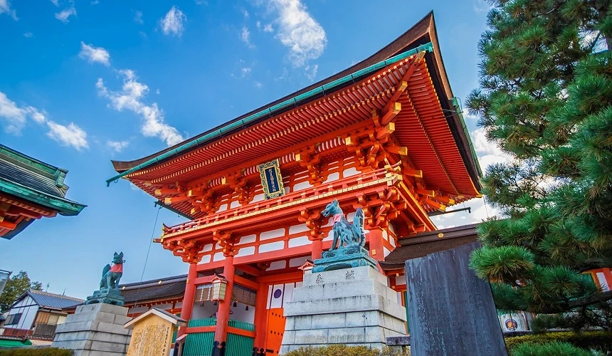
伏见稻荷大社
千本鸟居，日式经典
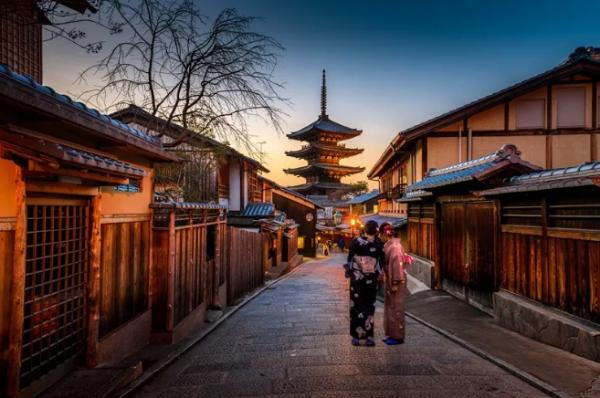
二年坂三年坂
古风街道，日式风情
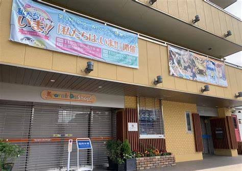
京阿尼
动漫圣地，粉丝打卡
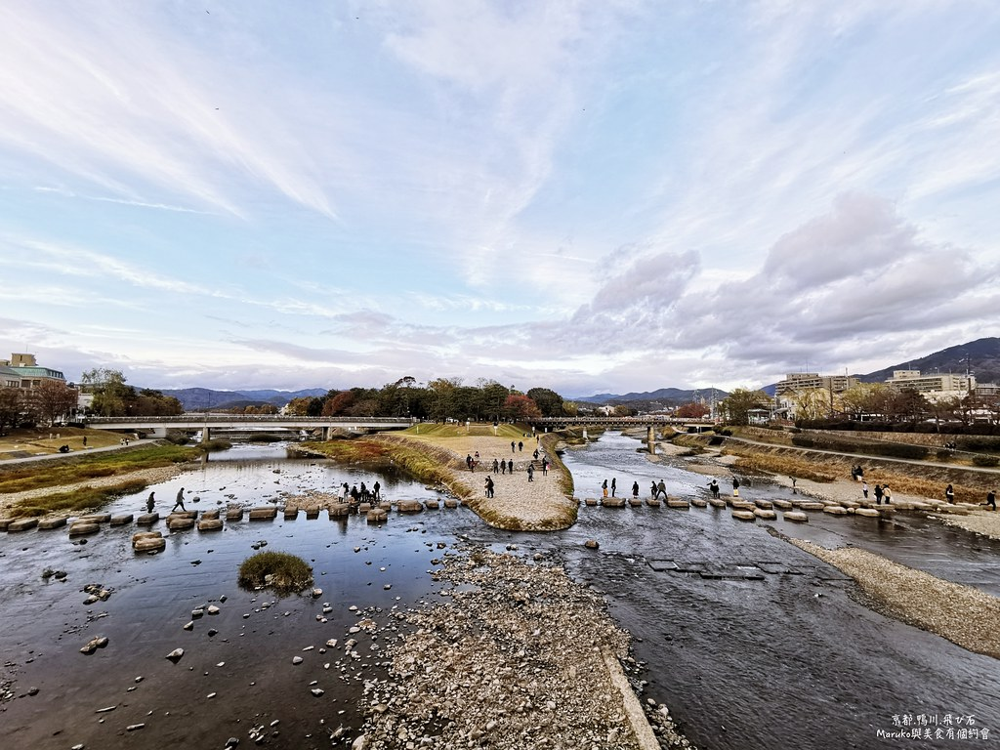
出町柳
京都静谧文艺街区
奈良地区
奈良公园
萌鹿相伴，千年古迹
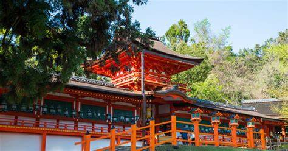
春日大社
世界遗产，青铜灯笼
日本全国旅游景点
探索更多精彩景点，点击进入 →